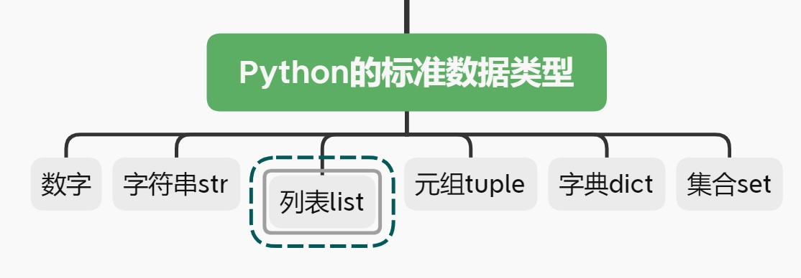

列表，简单却强大-Python基础连载（九）
开篇

我们已经学习了数字和字符串这两种数据类型，它们都有一个共同的特点，那就是一个变量只能存储一个数字或者字符串，如果有多个数字或者多个字符串，那就必须得用多个变量来存储。
比如，现在有'abc'，'d'，1，123，那么想要存储这些，必须这样做：
1 | v1='abc' |
当有成百上千甚至更多个待存储的元素时，显然需要的变量个数会非常多，过程会无比繁琐。
别担心！本期要学习的列表就是填补这一缺憾的，学完之后，你会发现，上面的过程只需写成如下一行代码即可：
1 | v=['abc','d',1,123] |
是不是迫不及待了，那就开始吧！
初识列表
列表用[]来包裹，[]内部可存放元素，这些元素之间用逗号,隔开。
举个栗子，现在需要统计一下“南极小学”六年级的5个班中，每个班打算今年暑假去南极旅行的人数，假设各班统计上来的人数分别是11,111,1234,2233,666，使用列表可以这样存储：
1 | num_go=[11,111,1234,2333,666] |
通过使用列表，事情一下子变得简洁了！
你已经学习过字符串，并且知道了字符串可以按照下标取某个字符，做切片等等。
列表也可以这样做！如果字符串的内容学明白了，那么本期内容将不成问题，这两者的某些方法几乎是一模一样的！比如字符串中的len()用于求字符串中字符的个数，在这里len()也可以求列表中所含元素的个数。
需要提出的是，列表中的元素可以是不同类型的，就像开篇中的``['abc','d',1,123]一样，这也使得简单的列表变得更加灵活，功能更加强大。
创建列表
方法1：使用x=[]创建一个空列表：
1 | x=[] |
方法2：使用list()创建一个空列表
1 | x=list() |
对比来说，方法1只能创建一个空列表，而方法2不仅可以创建一个空列表，还能将一个字符串，一个元组（后面会讲到）等转为列表数据类型。
举个字符串转列表(str->list)的栗子：
1 | s='Python!' |
操作列表
1.求列表长度
1 | num_go=[11, 111, 1234, 2333, 666] |
2。按照下标取对应位置元素
1 | num_go=[11,111,1234,2333,666] |
3.做切片
1 | num_go=[11,111,1234,2333,666] |
【栗子1】直接切片
1 | num_go[1:3] #取下标1到2的元素（和字符串一样，左闭右开） |
【栗子2】设定步长step为2（若不设定，则使用默认值1）
1 | num_go[0:5:2]#设定步长为2 |
【栗子3】取全部元素
1 | num_go[::] |
【栗子4】取全部元素的倒序排列
1 | num_go[::-1] |
【栗子5】只指明开始下标而不指明结束下标，会从开始下标一直取到最后
1 | num_go[2:] |
4.遍历列表元素
可以使用循环操作来遍历列表中的每一个元素，如下：
1 | for item in num_go: |
5.求列表中数
字元素的最值
1 | #最大值 |
6.求全部元素之和
1 | sum(num_go) |
7.列表拼接
1 | a=[1,2,3] |
列表的增删改查
说到增删改查，你是否又想起了在学习字符串的时候，我们也详细的介绍过关于字符串的增删改查。并且经过学习，你已经知道了字符串是不可变数据类型，凡是涉及到字符串的修改的操作，其实都是创建了一个新的字符串，这个新的字符串存储了修改后的字符串，而原字符串依旧丝毫不变。
这里的列表却有所不同，因为列表(list)是可变数据类型。
在列表中增加，删除，改动等操作都会直接在原列表中修改。
1.增
在列表中增加元素，常用的有append()和extend()这两种方法。
先来个栗子直观感受下，再来讲解两种方法的区别
1 | z=['a','b','c'] |
通过阅读上面两个栗子，可以总结出append()和extend()的异同：
两者都是在列表末尾添加元素，不同的是，append()一次只能添加一个元素，而extend()的()中必须是一个可迭代对象，因此extend()可以一次添加多个元素。
- 首先来解释
append()一次只能添加一个元素：
你可能会说，第一个栗子中向列表z中增加了一个列表，z的内容变为['a', 'b', 'c', 'd', [1, 2, 3]]，这不是增加了1，2，3总共3个元素吗？
不是的，这是一个嵌套的列表，也就是列表中的元素的类型也是列表类型，所以里面的的[1,2,3]要看成是一个元素。
我们可以通过求列表长度或者用下标取元素的方法来验证以上所说：
1 | z['a', 'b', 'c', 'd', [1, 2, 3]] |
- 再来解释
extend()的()中必须是一个可迭代对象：
你可以尝试使用extend()向列表中一个数字：
1 | h[1, 2, 3, 4, 5, 6, 7, 8] |
看，报错了，报错内容的意思是：整数（int）不是一个可迭代对象，因此报错。
所以，extend()里面必须是一个可迭代对象。像列表，字符串以及将要学习的元组等都是可迭代对象，因此可以使用extend()方法添加到列表中。
【添加字符串时，会遍历每一个下标对应的字符，作为列表中的一个元素】
1 | lis=[] |
【添加元组】
1 | #栗子1 |
由【栗子2】可以看出，extend()方法也可以一次只添加一个元素，只要该可迭代对象中只包含一个元素。
扩展：如何查看是否是可迭代对象？
Python提供了一种方法：
首先要知道，isinstance()用于查看某个对象是否属于某一类型，比如isinstance(1,int)就是用于查看数字1是否为int类型，返回布尔值，这里会返回True，因为1是int类型。
于是推而广之，我们也可以使用isinstance()查看某个对象是否是可迭代类型，只需要将该对象与可迭代类型放入isinstance中，查看其返回值即可。
可迭代类型Iterable需要手动导入:
1 | # 这句代码先记住就行，无需深究 |
然后就可以使用了：
1 | x=[1,2] |
以上就是关于append()和extend()方法的介绍。那你可能会说，这两种方法都是在列表末尾增加元素，那能不能在列表的最前面或者中间增加元素呢？
Python无所不能！
insert()方法可以实现将某一元素插入到指定下标位置，并将其后元素后移一个位置。
1 | x=[1,2,3,'a','b'] |
2.删
del
最粗暴的方法是使用del，这种方法比较强大，可以删除列表中的某一个元素，也可以使用切片方式一次性删除多个元素，甚至可以直接删除整个列表，这样整个列表就不存在了（并不是变为空列表，而是直接抹去）。
看个栗子：
1 | x['2333', 1, 2, 3, 'a', 'b'] |
pop()
pop()会将被删除的元素当做返回值返回。
默认删除列表末尾的元素：
1 | x=[1,2,3,4,5] |
也可以手动指定要删除元素的下标：
1 | x |
remove()
删除特定的元素，传入的是元素值。看栗子：
1 | x=[1,2,3,4,5] |
需要注意的是，若列表中有重复的元素，比如lis=[1,1,2,2,3,3,4]，在使用remove()方法时每次只能删除下标最小位置处的元素。看栗子：
1 | z=[1,2,3,2,1,5] |
clear()
用于清空一个列表，也就是将原列表变为一个空列表：
1 | z[1, 3, 2, 1, 5] |
3.改
可以一次修改一个元素（通过单个下标实现）：
1 | x=['P','y','t','aaa','o','n'] |
也可以一次修改多个元素(通过做切片实现)：
1 | z=[1,2,2333,2222,1111,6,7] |
4.查
index()用于查看某一元素所在下标：
1 | x['P', 'y', 't', 'h', 'o', 'n'] |
如果有多个相同元素，则取最小下标：
1 | z=[1,2,3,2,1] |
count()方法用于统计列表中所含特定元素的个数：
1 | x=[1,2,3,2,1,4,5,4,5,6] |
列表推导式
列表推导式可以代替简单的循环，使得你的代码更简洁，更具Python风，下面以一个栗子来学习一下列表推导式的用法。
问题：求1到10内的所有奇数
你会很自然的想到使用循环，就像下面的代码一样：
1 | for i in range(1,11): |
使用列表推导式可以让这一过程写起来更简单：
1 | ta=[i for i in range(1,11) if i %2!=0] |
对于刚开始接触列表推导式的同学，看不太懂也没关系，以后多加练习，有了语感，便能灵活运用了。
这里再给一个栗子，它用于将所有大于2的元素存到一个新的列表中：
1 | x=[] |
上面的循环代码等价于下面使用了列表生成式的代码：
1 | x=[i for i in [1,2,3,2,5] if i>2] |
看，列表推导式一行代码就能搞定，真香！